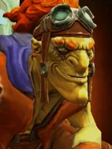
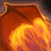

Firefly
Active ability: Activates on Full Mana
Batrider flis towards the farthest cell which allows him to attack an enemy, laying down a trail of flames from the air. The fire damages any enemies it touches, causing damage over time.
| ★ | ★★ | ★★★ | |
|---|---|---|---|
| DAMAGE PER SECOND | 50 | 75 | 100 |
| DAMAGE RADIUS | 200 | ||
| DURATION | 10 | ||
| Cooldown (s) | 15 | 12 | 9 |
| Mana cost | 100 | ||
When an enemy escapes into the Yama Raskav Jungle, most would cut through the brush to find the fugitive. Batrider just chooses to destroy the jungle along with his foes.
Stats
| ★ | ★★ | ★★★ | |
|---|---|---|---|
| Health | 600 | 1200 | 2400 |
| Mana | 100 | 100 | 100 |
| Armor | 4 | 4 | 4 |
| Magic resistance | 0% | 0% | 0% |
| Attack damage | 40–55 | 80–110 | 160–220 |
| Attack interval (s) | 1.3 | 1.3 | 1.3 |
| Attack range | 400 | 400 | 400 |
| Move speed | 500 | 500 | 500 |
 Troll · Voodoo Frenzy
Troll · Voodoo Frenzy
- (2) All allies gain +20 attack speed.
- (4) All allies gain another +50 attack speed (+70 total).
- (6) All allies gain +20 attack speed for each attack they land, for the rest of the battle, up to +120.
 Knight · Divine Protection
Knight · Divine Protection
With the (2) Knight bonus, a Knight next to another friendly Knight starts the battle with a shield. It lasts until the Knight starts acting.
- (2) Knights get a 25% chance every 3s to gain a 3s shield (-35% physical and magical damage taken).
- (4) All allies get a separate 25% chance every 3s to gain a 3s shield.
- (6) All allies get another separate 25% chance every 3s to gain a shield. Every shield proc heals the unit for 500.